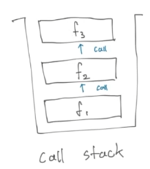
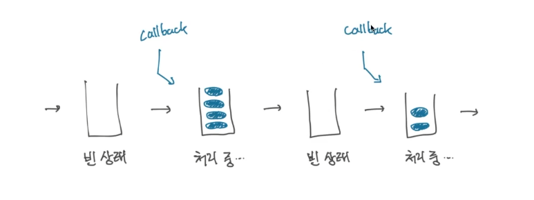
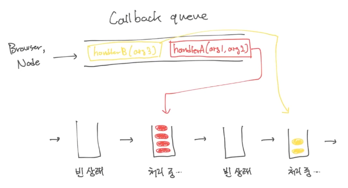
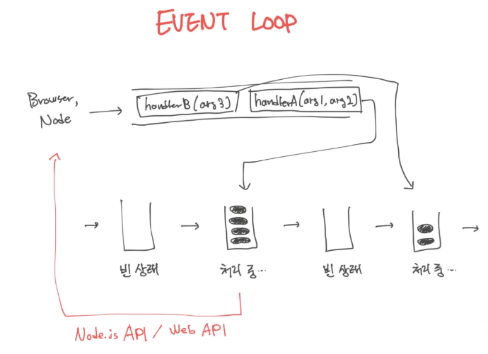

Call Stack, Non-blocking IO, Event Loop
안녕하세요. 성장하는 것을 즐기는 changuk이라고 합니다. 현재 fastcampus에서 backend 개발을 공부하고 있습니다. 강의를 들으면서 해온 것들을 작성하여 지식을 공유하고 또 제가 잊었을 때 다시 와서 볼 수 있도록 내용들을 정리하려고 합니다.
NodeJS를 잘 이해하기 위해서는, JavaScript의 동시성 모델(실행 모델)에 대해 잘 이해해야 합니다.
실행모델은 Event Loop, Call Stack, Callback queue개념으로 이루어집니다. 이번시간은 Event Loop, Call Stack, Non-blocking IO 를 학습하도록 하겠습니다.
Contents
Event Loop
먼저 Event Loop부터 알아보도록 하겠습니다. Event Loop 모델은 여러 스레드를 사용합니다. 그 중 우리가 작성한 JS 코드가 실행되는 스레드를 메인 스레드라 부릅니다.
한 NodeJS 프로세스에서 메인 스레드는 하나이며, 한 순간에 한 줄씩만 실행됩니다. 즉, 우리가 작성한 JS 코드가 동시에 여러줄 실행되는 경우는 적어도 한 프로세스 내에서는 없다고 볼 수 있습니다.
그러나, 그 외의 일(file I/O, network…)을 하는 워커 스레드는 여럿이 있을 수 있습니다.
이 NodeJS 프로세스 하나에서 메인 스레드가 하나이고, 한 순간에 한 줄씩만 실행된다는 제약은 굉장히 강력하고 효과적입니다. 이유는, 어떤 변수가 동시에 여러 실행 Context에 의해 뒤바뀔일이 없기 때문입니다. 따라서 프로그램의 상태를 예측하기가 훨씬 용이하다는 뜻입니다.
Call Stack
그럼 Call Stack은 무엇일까요? 지금 시점까지 불린 함수들의 스택이라고 할 수 있습니다. 스택 자료구조는 아래에서부터 쌓이는 FILO(First In Last Out)형태의 자료구조이므로, Call Stack은 함수가 호출될 때 생성되어 쌓이고 리턴할 때 제거됩니다. 다음과 같은 모습을 한다고 할 수 있죠.

function f3() {}
function f2() {
f3();
}
function f1() {
f2();
}
f1();
그러면 Call Stack이 우리의 JavaScript 실행 모델과 어떤 연관이 있는지 살펴보자면, 다음 순서로 진행됩니다.
- Call Stack은 빈 상태에서 시작합니다.
- 어떤 요인에 의해 Callback(함수)을 실행합니다.
- Callback이 다른 함수를 부르고, 다른 함수가 또 다른 함수를 부르게 됩니다.
JavaScript는 위의 순서대로 작동되는데 중요한 것은, Event Loop가 다음 Callback을 처리하려면 지금 처리하고 있는 Callback의 실행이 완전히 끝나야 한다는 것입니다.
Call Stack이 완전히 빌 때까지 처리한다는 것과 동일합니다. 이러한 JavaScript 실행 엔진의 특성을
Run-to-completion 이라고 합니다.
다음 그림을 참고해주세요.

Callback Queue
Callback Queue는, Callback들이 쌓이는 Queue를 의미합니다. 설명이 너무 성의없었죠? 추가해서 말씀드리겠습니다. 일단 Queue 자료구조는 맨 처음 들어온 자료가 제일 먼저 나가는 FIFO(First In First Out)구조를 갖게 됩니다. 이런 Callback Queue는 Message Queue라고도 부르는데, 앞으로 실행할 Callback(함수와 인자들)들을 쌓아두는 Queue입니다.

Callback들은 브라우저나 Node가 어떤 일이 발생하면(Event) 메인 스레드에 이를 알려주기 위해(Callback) 사용됩니다. 이벤트의 종류로는 여러가지가 있는데 예로 파일 처리의 완료, 네트워크 작업의 완료, 타이머 호출 등이 있습니다.
Quiz 1
이해를 점검하기 위해 문제를 한번 풀어보도록 합시다. 어떤 순서로 출력되어야 할까요??
console.log("1");
setTimeout(() => {
console.log("2");
}, 0);
console.log("3");
위의 함수들은 메인 함수로서 바로 Call Stack에 들어가게 될 것입니다. 따라서 Call Stack에서 한 줄씩 실행이 됩니다. setTimeout()의 0값은, 0ms다음에 바로 Callback함수를 실행하라는 요청입니다. 다음과 같은 순서로 진행이 되겠죠?
console.log('1')이 실행됩니다.setTimeout()이 실행됩니다.console.log('3')이 실행됩니다.
여기서 Callback은 실행되지 않습니다. 브라우저와 Node가 인식만 하고 있습니다. 즉, setTimeout()은 Node 혹은 브라우저에게 Callback을 실행해달라고 하고 다음순서로 넘어갔기 때문에 setTimeout()을 처리하고 일정시간이 지나고 나서야 setTimtout()안의 Callback을 Callback Queue에 입력하게 될 것입니다.
그러므로 console.log('1'), setTimeout()과 console.log('3')을 실행하고 난 뒤에야 Call Stack이 빈 상태가 되므로 그제서야 setTimeout()안의 Callback을 실행할 것입니다. 그래서 정답은 1, 3, 2가 됩니다.
Quiz 2
5초동안 메시지는 몇 번이나 출력되는 것이 맞을까요?
setInterval(() => {
console.log("Hey!");
while (true) {}
}, 1000);
한번 생각해볼까요?
먼저 위의 코드가 실행되고 난 후에는 Call Stack이 비어있을 것입니다. 그 후 Node나 브라우저는 내부적으로 동작하는 Timer로 1초 뒤에 Callback을 Callback Queue에 입력하게 됩니다.
Call Stack이 비어있는 상태이기 때문에 Callback Queue에서 하나의 Callback을 꺼내서 실행을 하게 됩니다(위의 코드). 또 매초 후에 Callback을 다시 Callback Queue에 입력하게 됩니다. 그럼 console.log()가 4번이 출력되는게 맞을까요?
아닙니다. 정답은 1번입니다. 이유는, while loop이 도는 동안 Call Stack이 절대 비지 않기 때문입니다. Call Stack이 비어있으려면, Callback이 어떻게든 return을 해야합니다. 그러나 위의 코드에서는 return이 절대로 일어날 수 없는 상황이었죠.
이 동안은 Callback Queue에서 Callback을 꺼낼 수가 없기 때문에, setInterval이 아무리 Callback을 쌓아도 메인 스레드에서 실행될 수가 없습니다. 이러한 경우를 Event Loop을 block한다고 합니다.
따라서 non-blocking I/O를 Node에서 가장 기본적인 형태로서 사용하게 됩니다.
non-blocking I/O & offloading
앞으로 자주 보게 될 다음 코드를 분석하면서 시작해보겠습니다.
fs.readFile(fileName, (err, data) => {});
someTask();
위의 코드는 Call Stack에 입력됩니다.
첫 줄에서는 Node에게 파일을 읽어달라고 요청하고, (메인 스레드에서 파일을 읽는 것이 아닌) 워커 스레드에서 파일을 읽기 시작합니다.
메인 스레드는 첫 줄을 실행했으니, 다음 줄을 실행하게 되겠죠. readFile()의 호출이 끝난 직후 someTask()를 실행하게 됩니다. Call Stack이 빌 때 까지 계속 처리를 수행해 주어야 하기 때문이지요.
그럼 어느 순간에 Node의 워커 스레드가 파일을 다 읽거나 에러를 출력하게 될 텐데,
- Callback Queue에 Callback 함수와, 함수의 err, data인자를 채워서 넣고
- Callback Queue에서 꺼내진 후 Call Stack에 입력될 때, 이 부분이 실행됩니다.
요약하자면 다음과 같습니다. 브라우저나 NodeJS에서나, Callback은 Web API 또는 Node API의 동작이 끝나면 Callback Queue에 등록합니다. 그 후 브라우저나 Node가 요청받은 일을 하고 있는 동안은, 메인 스레드와 Event Loop는 영향을 받지 않고 계속 실행됩니다.
이런 현상을 offloading이라고 하며, Node 서버의 메인 스레드가 하나임에도 불구하고 빠르게 동작할 수 있는 이유입니다. 메인 스레드가 오래 걸릴 일을 기다리지 않기 때문이죠.
Conclusion
지금까지의 내용을 바탕으로 Event Loop에 대한 내용을 정리해보도록 하겠습니다.

- Callback Queue에서 Callback을 꺼내고 (없다면 생길 때까지 기다리고)
- Callback의 처리가 끝날 때까지 Call Stack안의 내부 함수들을 실행하고
- 이를 반복합니다.
하나의 Callback을 처리하는 동안에 여러가지 호출이 있을 수 있습니다. NodeJS API/ Web API를 호출하게 될텐데, 브라우저와 Node는 그것들을 받아서 워커 스레드에게 일을 시킬 것입니다.
워커 스레드가 일을 다 하고 나서 JavaScript에게 알려줘야 할 것이 있다면 Callback Queue에 알려줄 것을 등록하게 되는 것이지요.